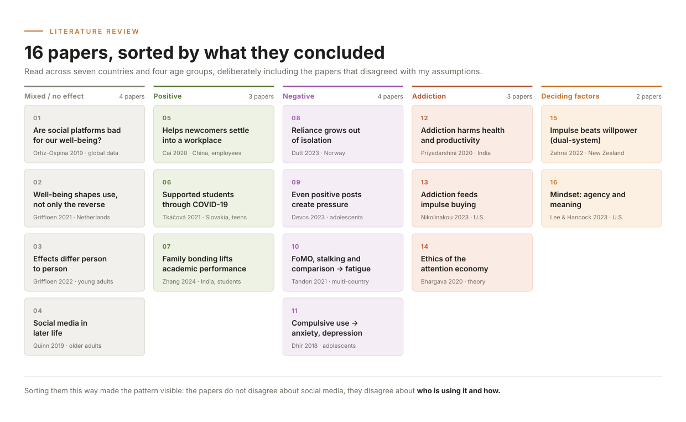
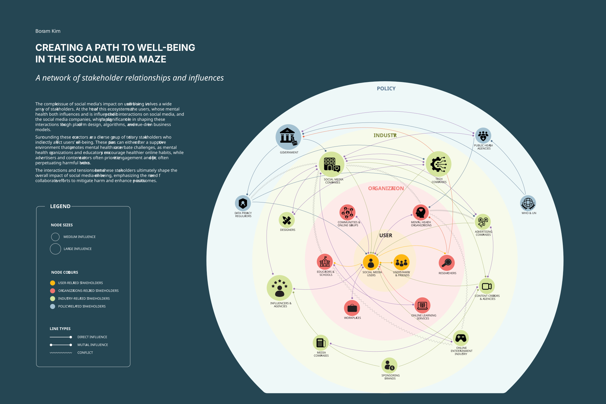
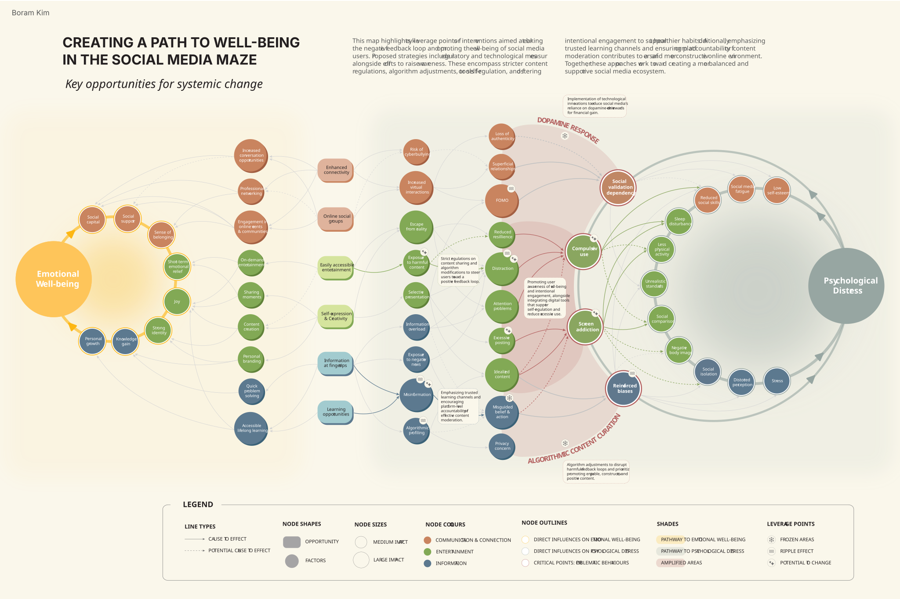
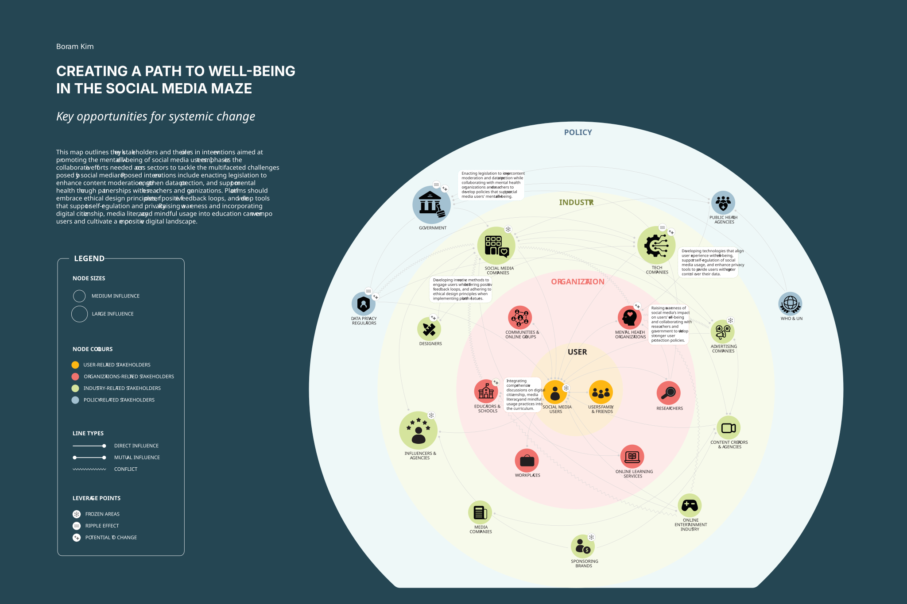

Creating a Path to Well-Being
in the Social Media Maze
Two system maps, causal and actor, plus a leverage-point overlay on each, tracing how social media shapes emotional well-being and where the system can be moved.

Scrolling, scrolling, scrolling. Is this making me feel better or worse?
We've all been there, endlessly swiping through our feeds, trying to stay connected, entertained, and informed. It's become part of our daily routines, almost second nature. But after hours of scrolling, what started as a way to stay connected sometimes left me feeling drained and disconnected.
How is social media influencing emotional well-being, and what can a systems perspective reveal about the interconnected factors that support or harm it?
It's not just about the number of likes or followers. There's a deeper, more complex relationship between the time we spend on social media and how it impacts our mental health, emotions, and overall sense of self. So I mapped it.
The harm isn't in the platforms alone
Literature review
A literature review that deliberately sought out the benefits and balanced perspectives as well as the darker side of algorithms and dopamine-driven feedback loops, to avoid bias in the mapping.
Subject-matter experts
A social media researcher and a counsellor at Mount Royal University, whose expertise grounded the theory in how social media shapes mental well-being in real-world contexts.

It's not just social media itself, but how we engage with it that determines its impact on our well-being. The harm doesn't necessarily come from the platforms themselves, but from how we interact with them, why we use them, and how they are intentionally designed to keep us engaged.
On one hand, social media offers connection, joy, and easy access to information. On the other, it can foster comparison, overwhelm, and emotional dependency. What lifts one person up may weigh another down. The same features that connect us can also exhaust us.
Two maps, each read twice
I mapped the system two ways: once as cause and effect, once as the people involved. Then I read each map a second time, marking where the system resists change and where it can be moved. The overlays sit directly under the map they came from.
Map A · Causal Map

What happens, and what it leads to.
Map B · Actor Map

Who is involved, and who holds influence.
Full interactive maps below
A web of interconnected causes and effects
The causal map traces the system through the three things social media actually does: connection, entertainment, and access to information. Each of the three can spiral upward or downward, and what decides the direction is the user's psychological state.
One more thing worth mentioning: the negative loop is the more fragile of the two, and far easier to get stuck in, because dopamine-driven content and the algorithms that serve it are built to keep you there.
Where the loop can actually be broken
Reading the same map for leverage separates what is frozen from what can move. Dopamine response and business incentive stay fixed; the mechanisms between them do not.
- Stricter content regulation
- Algorithm adjustment
- Tools for self-regulation
- Awareness and media literacy

A network of stakeholder relationships and influences
The actor map identifies key stakeholders and reveals how they influence one another. At the heart of the ecosystem are the users; surrounding them are educators, mental health organizations, advertisers, and content creators, who either foster a supportive environment or exacerbate the challenges.
Who has to move for the system to move
The same network, marked with the interventions each group is actually positioned to make. No single actor can carry it.
- Legislation, paced by the platforms it governs
- Self-regulation and privacy from platforms
- Media literacy and digital citizenship from educators
- Intentional engagement from users

A more balanced and informed view, instead of good or bad
Rather than asking whether social media is simply good or bad, the system map encourages a more balanced and informed view by revealing the complex web of interconnected factors that influence emotional well-being online. It shows how outcomes are shaped by more than individual choices or app features.
Understanding
It helps users, educators, and designers better understand why certain online behaviours feel rewarding or harmful.
Leverage
It identifies leverage points where small changes could lead to healthier interactions.
Conversation
It promotes more constructive conversations about digital wellness by replacing blame with understanding.
These maps do not claim to have all the answers. They help us make sense of the broader context, recognize patterns, and explore how we might design healthier relationships with social media moving forward.

ürcareer
Career changers were navigating alone with generic job boards. Built a mobile platform with tailored matches, mentor access, and a peer community.

Cudagra
2,000 people had signed up, but almost nobody was playing. Redesigned the profile and invite flow around trust between strangers, turning sign-ups into a weekly habit.
eatt
Hosts planning group meals were chasing allergy info through scattered texts, and one missed reply could put someone at real risk. Built a way to collect detailed allergy info from every participant and recommend menus that work for the whole group.